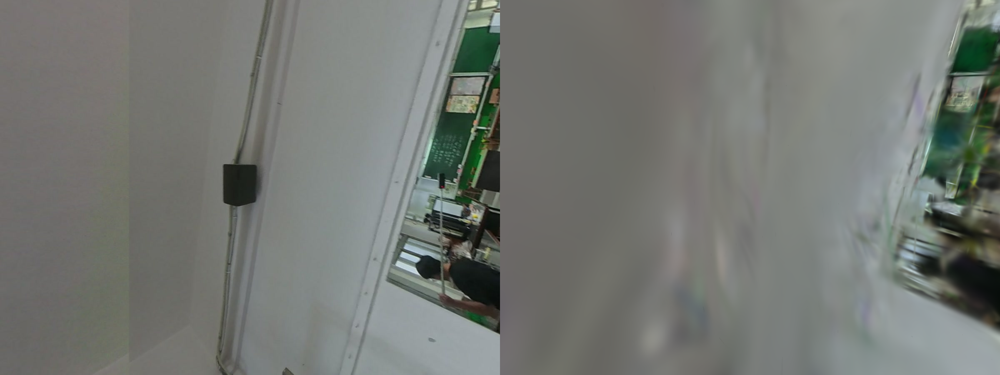
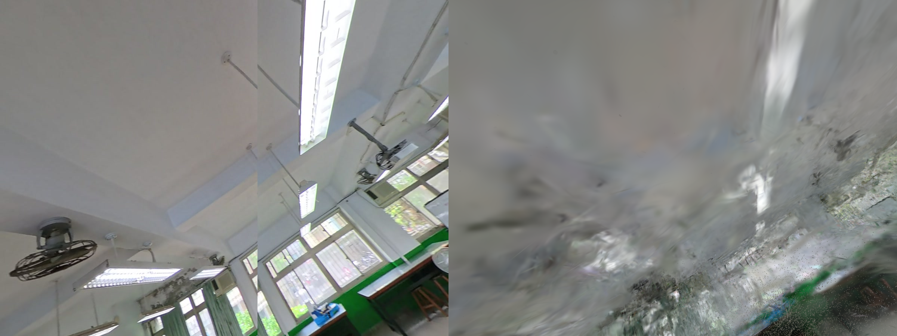
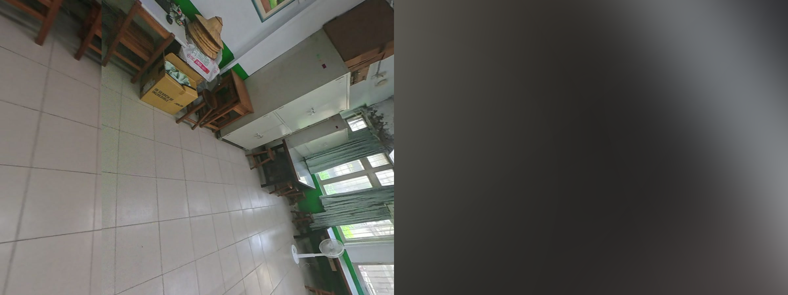
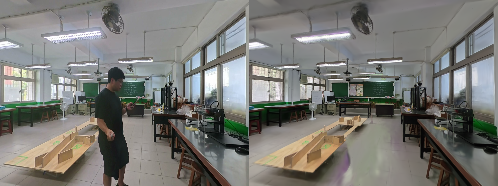
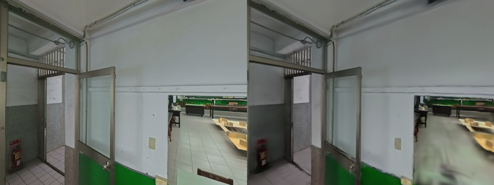

家政教室 3DGS「去雲霧 ＋ 保留球諧 SH」的雲端重訓全程：流程、踩坑、與誠實的成效判讀。先在 1200px 撞牆（太糊、不該上站），再用 1600px + bilateral grid 翻盤成可上站品質（PSNR 18→22、LPIPS 砍半）。2026/06/21–22。
第一人稱看到的雲霧＝針狀低透明高斯，跟銳利桌邊／牆面是同類異向高斯（本場景長寬比中位 13.6、75% 是針）。所以後處理兩難：夾全部會糊、刪太多會破洞。研究一致結論（StableGS／DRGSplat／Lund-LiDAR 2026）：訓練時加深度約束，把高斯壓回真實表面 → 雲霧根本不長。順便把網頁版被 -H 0 剝掉的 SH 重新訓回來，Blender／KIRI 才能正常渲染、可重光。
配方：simple_trainer.py default --data-factor 1 --depth-loss --sh-degree 3 --max-steps 30000 --save-ply --disable-viewer
Colab 現在的映像是 torch 2.11.0+cu128（超新，gsplat 無對應預編 wheel）。先用 pip install gsplat --no-build-isolation 從源碼編成功，接著跑官方 simple_trainer.py 卻一個接一個缺套件／版本不合——逐一排掉才跑得起來：
| # | 報錯 | 根因 | 解法 |
|---|---|---|---|
| 1 | No module named 'tyro' | 整包 requirements.txt 裡有要編譯的套件，build 失敗就全部 rollback，tyro 也沒裝成 | 別裝整包；只裝純 Python 輪子：tyro nerfview viser tqdm imageio tensorboard torchmetrics plyfile |
| 2 | gsplat.color_correct | PyPI sdist 漏打包此子模組；只用在 eval 的色彩校正，不影響訓練/輸出 | 寫一個 identity stub 模組頂掉它 |
| 3 | datasets.colmap | examples 的 datasets/ 沒有 __init__.py，被 Colab 預裝的 HuggingFace datasets 套件搶先 import | touch datasets/__init__.py → 變正規 package，cwd 最前 → 本地版勝出 |
| 4 | No module named 'pycolmap' | 要的是 rmbrualla 的純 Python pycolmap（有 SceneManager），不是官方綁定 | pip install git+rmbrualla/pycolmap@cc7ea4b |
| 4b | OverflowError … uint64 | 該套件寫 np.uint64(-1)，NumPy 2.0 不再把負數環繞成無號數 | patch 成 np.uint64(2**64-1) |
| 5 | No module named 'fused_ssim' | SSIM loss 的 fused CUDA kernel（硬 import） | pip install git+rahul-goel/fused-ssim --no-build-isolation（編 ~1.5 分） |
| 6 | No module named 'splines' | nerfview 互動 viewer 的依賴 | pip install splines ＋ 訓練加 --disable-viewer |
整條深度正則管線在 Colab 跑通並完整記錄；去霧成功飄絲消失、高斯貼回表面；SH 練回來可餵 Blender／KIRI 重光。但 eval 指標偏低，得看實際畫面才準。
下面是保留的新視角（held-out）渲染——左：原始照片（GT）／右：模型預測。這是檢驗「學得準不準」最公正的方式。



同一套深度正則管線，兩個改動：(1) 輸入解析度 1200→1600px（改用 homeec-stitched 那套 COLMAP）；(2) 開 --use-bilateral-grid，校正 360 衍生各幀的曝光／白平衡不一致（這是 Brush 做不到、gsplat 才有的）。結果直接翻盤：
| 指標 | 1200px 舊版 | 1600px + bilateral |
|---|---|---|
| PSNR ↑ | 18.41 | 22.04（+3.6 dB） |
| SSIM ↑ | 0.776 | 0.846 |
| LPIPS ↓（感知相似） | 0.478 | 0.235（砍半） |
畫面更直接——同一個保留新視角（左＝原始照片 GT／右＝模型預測）：


交付：含 SH 壓縮模型（143MB，給 Blender/KIRI）＋去 SH web 版（38MB，2.44M 高斯）。本實驗證明深度正則 + SH 管線在足夠解析度下能產出可部署成果。
Colab Pro · NVIDIA L4 · torch 2.11.0+cu128 · gsplat 1.5.3（--no-build-isolation 源碼編）· fused-ssim · rmbrualla/pycolmap · 家政 COLMAP 802 視角 · @playcanvas/splat-transform（壓縮保 SH）。